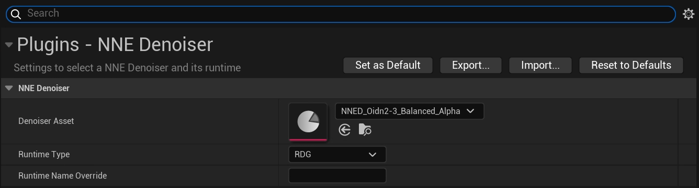
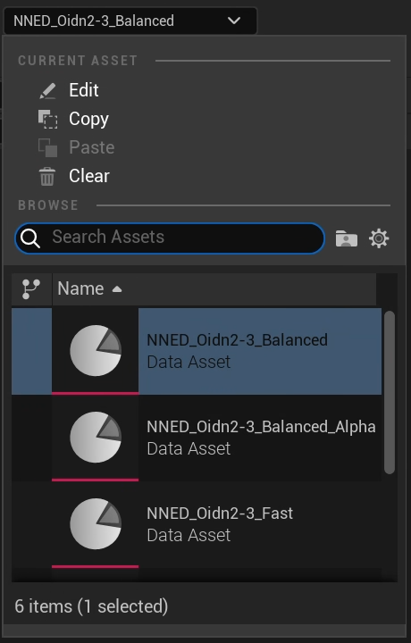
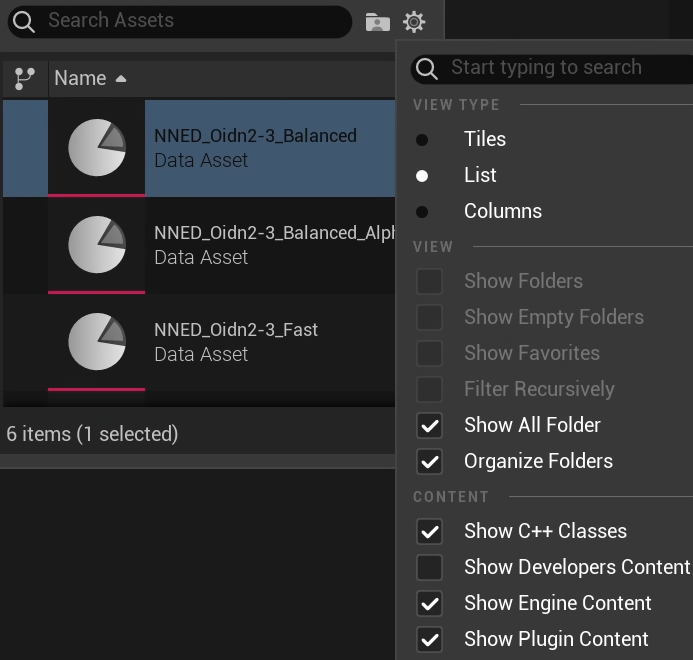
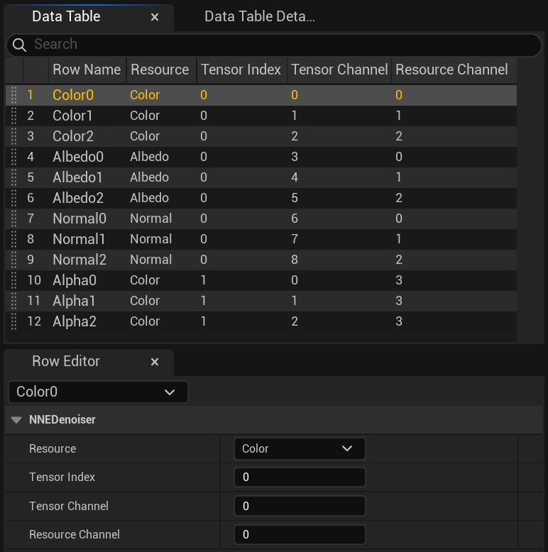
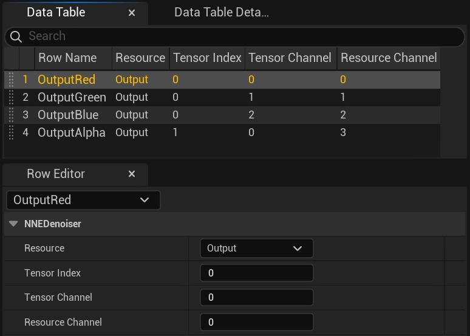
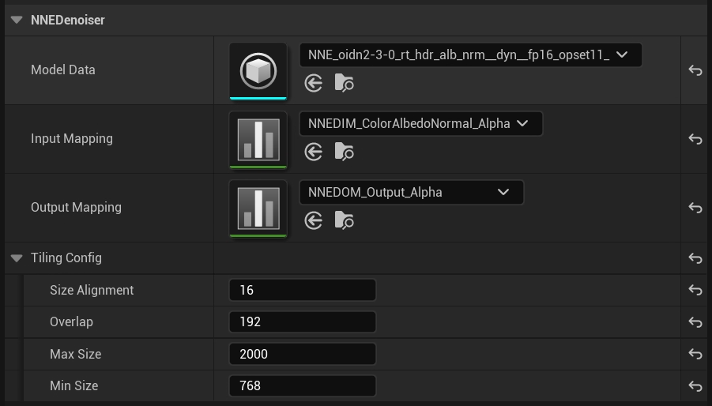

NNE Denoiser — это инструмент для устранения искажений, который позволяет импортировать и запускать пользовательские нейронные сети для устранения искажений с помощью среды выполнения NNE. Модели импортируются как обычные ресурсы UNNEModelData, а вывод для устранения искажений может выполняться на центральном процессоре, графическом процессоре или в распределенном графическом процессоре в зависимости от возможностей выбранной среды выполнения. Плагин поставляется с различными версиями алгоритма Open Image Denoiser от Intel (быстрая, сбалансированная и высококачественная, с альфа-каналом и без него), которые можно использовать вместо пользовательской модели.
Настройки плагина NNEDenoiser позволяют пользователю выбрать инструмент для пространственного шумоподавления, а также указать, на каком устройстве будет выполняться обработка — на центральном процессоре, графическом процессоре или в RDG, — и какую среду выполнения использовать. Чтобы трассировщик пути использовал нейронные сети, указанные в этих настройках, необходимо установить r.PathTracing.Denoiser.Name в значение NNEDenoiser.

Модели вместе с их входными и выходными данными описываются в ресурсах данных. При смене ресурса данных изменится и модель, используемая для шумоподавления.

Убедитесь, что оба флажка Показать содержимое движка и Показать содержимое плагина отмечены в разделе Настройки просмотра (значок шестеренки), если ресурсы для Intel Open Image Denoiser не отображаются в раскрывающемся списке.

В этом раскрывающемся списке можно выбрать, где будет выполняться шумоподавление. В зависимости от выбранной среды выполнения и от того, доступна ли она на текущей платформе, будут работать те или иные варианты. Ознакомьтесь с возможностями отдельных сред выполнения, чтобы узнать, какие конфигурации допустимы.
При этом зашумленные результаты копируются на центральный процессор, там выполняется логический вывод, а результаты загружаются обратно на графический процессор. Обратите внимание, что копирование на два устройства может замедлить процесс шумоподавления.
Это позволит скопировать зашумленные результаты на центральный процессор, передать их в среду выполнения, которая скопирует их на графический процессор для логического вывода, а затем снова скопирует на графический процессор.
Из-за наличия 4 копий устройства не рекомендуется использовать этот параметр, если только нет другой среды выполнения для запуска модели или если запуск модели на процессоре происходит медленнее.
Этот параметр является наиболее эффективным, поскольку зашумленное изображение обрабатывается на устройстве без копирования в центральный процессор. Этот параметр рекомендуется использовать, если доступна соответствующая среда выполнения.
С помощью этого поля можно переопределить используемую среду выполнения NNE. Названия сред выполнения, которые следует использовать, приведены в описании отдельных сред выполнения. Также обратите внимание, что для работы плагина, содержащего среду выполнения, его необходимо включить вручную. Кроме того, выбранная среда выполнения должна быть совместима с типом среды выполнения и поддерживать выбранную модель.
Чтобы использовать пользовательскую нейронную сеть в качестве шумоподавителя, вам понадобится модель нейронной сети, определение входных и выходных параметров, а также ресурс NNEDenoiser.
Нейронную сеть можно просто добавить, перетащив файл нейронной сети в редактор контента, после чего будет создан ресурс UNNEModelData. Обратите внимание, что разные среды выполнения поддерживают разные форматы файлов. Чтобы успешно импортировать нейронную сеть, необходимо включить среду выполнения, поддерживающую этот формат.
Нейронная сеть может иметь несколько входных и выходных тензоров, и каждый тензор может состоять из нескольких каналов. Чтобы сопоставить данные, предоставляемые трассировщиком пути (например, цвет, нормаль, альбедо и т. д.), с входными тензорами и каналами нейронной сети, необходимо создать файл сопоставления.
Чтобы создать новое сопоставление:

Аналогичным образом можно создать еще один ресурс для определения выходных сопоставлений.

Ассеты NNEDenoiser определяют модель, входные и выходные сопоставления, а также конфигурации разбиения на фрагменты и затем используются в настройках плагина для выбора модели, которая будет использоваться для трассировки пути. Чтобы создать новый пользовательский ассет, щелкните правой кнопкой мыши в окне содержимого редактора, выберите «Разное», а затем «Ассет данных». В открывшемся диалоговом окне найдите ассет NNEDenoiser и выберите его. Выберите импортированную модель и сопоставления, которые вы определили в соответствующих выпадающих списках.

Затем настройте конфигурацию разбиения на фрагменты в соответствии с характеристиками вашей модели.